原文: How to Install and Configure Askbot with Nginx on CentOS 7
Askbot is an open source software for creating Q&A forums based on Python Django Framework. It’s basically a Q&A system like StackOverflow, Yahoo Answers, and others. Created by Mike Chan and Sailing Cai on 2009, and it’s easy to install and configure on Linux systems like Ubuntu and CentOS. Many large open source software projects like Fedora and LibreOffice are using it.
In this tutorial, we will show you how to install Askbot Python Django application using uWSGI and Nginx web server on CentOS 7 system. As for database, we will be using PostgreSQL for Askbot installation.
What we will do
- Install dependencies
- Install and configure PostgreSQL
- Install and configure Askbot
- Install and configure uWSGI
- Install and configure Nginx Webserver
- Test the setup
Prerequisites
- CentOS 7 Server
- Root privileges
Step 1 - Install dependencies
In this step, we will install some packages that are needed for successful Askbot installation. These include ‘Development Tools’, Epel repository, and some python-related tools (for managing Python packages). So let’s begin.
First, install CentOS ‘Development Tools’ with yum group command below.
yum group install 'Development Tools'
Then install the Epel repository.
yum -y install epel-release
And finally install the python packages, including python pip, python-devel and python six.
yum -y install python-pip python-devel python-six
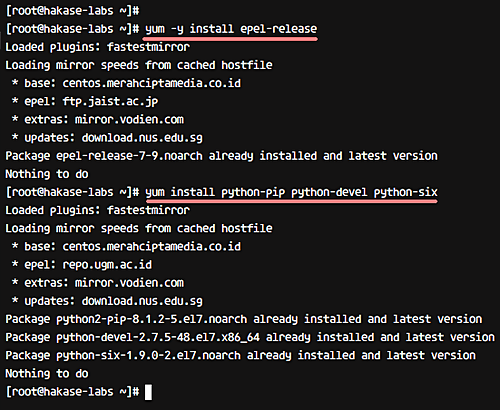
Step 2 - Install and configure PostgreSQL
Now we need PostgreSQL database, which is available in the CentOS repository. In this section, we will discuss how you can install PostgreSQL database, change the postgres password user, create a new user and database for the Askbot installation, and finally, change the postgres authentication config.
So let’s start with installing PostgreSQL from the repository using the yum command below.
yum -y install postgresql-server postgresql-devel postgresql-contrib
Once the installation is complete, we need to initialize the database, which you can do using the command below.
postgresql-setup initdb
Moving on, start postgres and enable it to launch automatically at the boot time.
systemctl start postgresql
systemctl enable postgresql
At this point, the PostgreSQL database should be installed. Next, we need to reset the postgres user password. For this, first login as ‘postgres’ user and access the psql command line tool.
su - postgres
psql
And then give the postgres user a new password.
\password postgres
Now, create a new database and user for Askbot. For example, we want to create a new user ‘hakaselabs‘ with password ‘hakase123‘, and the database named ‘askbotdb‘. The following postgres queries will help us create all of these.
create database askbotdb;
create user hakaselabs with password 'hakase123';
grant all privileges on database askbotdb to hakaselabs;
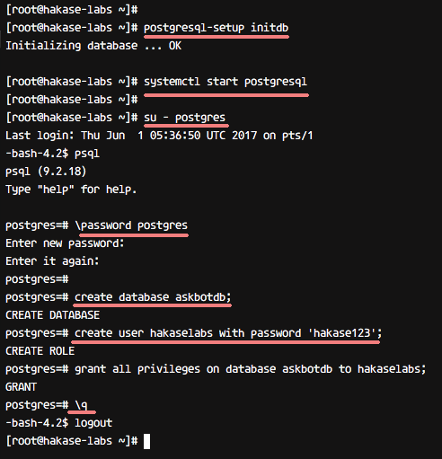
So now, a database and user for Askbot installation have been created. The next step is to edit the postgres configuration for authentication setup, which you can do by heading to the ‘pgsql/data’ directory and editing the ‘pg_hba.conf’ file with vim.
cd /var/lib/pgsql/data/
vim pg_hba.conf
Once inside the file, change all authentication to md5, as shown below.
local all all md5
# IPv4 local connections:
host all all 127.0.0.1/32 md5
# IPv6 local connections:
host all all ::1/128 md5
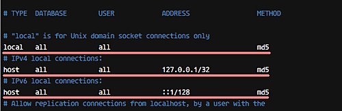
Now, save and exit the file, and then restart the postgres service.
systemctl restart postgresql
So by now, the PostgreSQL database has been installed; database for the Askbot installation has been created; and the postgres user authentication method has been changed to md5.
Step 3 - Install and configure Askbot
In this step, we will discuss the installation and configuration of Askbot. We will install Askbot under a user named ‘askbot’, and using the virtualenv python. So let’s begin.
Firstly, create a new user ‘askbot’ and give the user a new password.
useradd -m -s /bin/bash askbot
passwd askbot
Then add the ‘askbot’ user to the ‘wheel’ group for sudo command access (not sure what ‘sudo’ is? Learn more about it here).
usermod -a -G wheel askbot
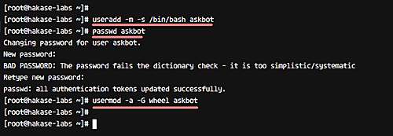
Now upgrade pip to the latest version and install the python virtualenv package.
pip install --upgrade pip
pip install virtualenv six
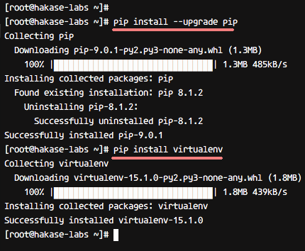
Next. log in as ‘askbot’ user and create new python virtual environment ‘hakase-labs’ with virtualenv.
su - askbot
virtualenv hakase-labs/
Go to the ‘hakase-labs’ directory and activate the virtual environment for Askbot installation.
cd hakase-labs/
source bin/activate
Now install askbot and other python packages with pip command on ‘hakase-labs’ virtual environment.
pip install six
pip install askbot psycopg2
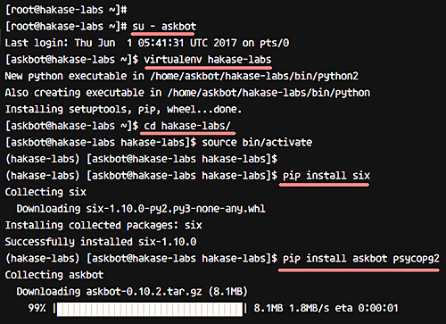
Next, create a new directory for the ‘Askbot’ project. Please make sure you don’t use ‘askbot’ as the directory name. In our case, for example, we created a new directory named ‘myapp’
mkdir myapp/
Go to the myapp directory and run the ‘askbot-setup’ command.
cd myapp/
askbot-setup
The ‘askbot-setup’ command will ask you certain things. For example, you will be asked about directory path to deploy Askbot - you can type ‘.’ and press Enter to continue. Similarly, when asked about database engine, type ‘1’ to use postgresql and press Enter. For database-related details, enter databasename as ‘askbotdb’, database user as ‘hakaselabs’, and password as ‘hakase123’.
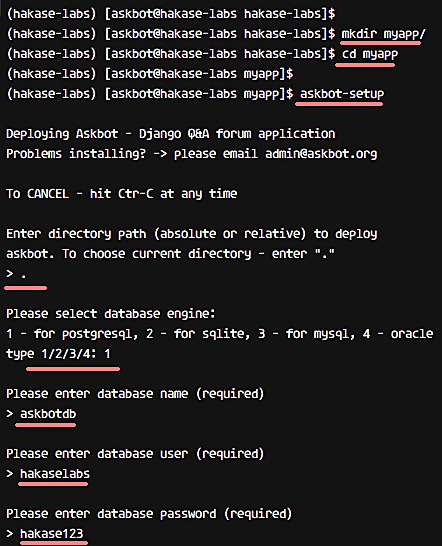
So Askbot is now installed on the ‘myapp’ directory. Now we need to generate Askbot Django static files and the database.
Run the command below to generate Askbot Django static files.
python manage.py collectstatic
When asked for confirmation, type ‘yes’ and press Enter.
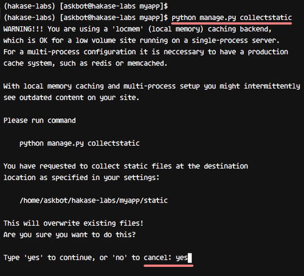
Now, to generate the database, run syncdb as below.
python manage.py syncdb
You will be asked about creating the admin user and password. So when asked, type the username, email, and password for admin configuration.
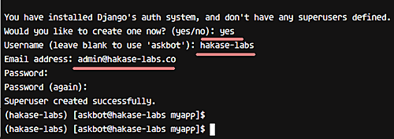
So by now, Askbot has been installed, static files have been generated, and the database configuration has been completed.
You can test the Askbot installation with runserver command below.
python manage.py runserver 0.0.0.0:8080
Open your Web browser and type the server IP address, and you should see a page similar to the following:
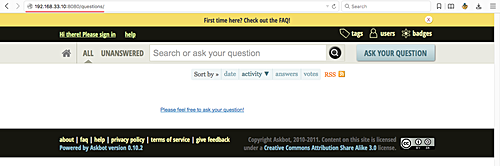
Step 4 - Install and configure uWSGI
We will be using uWSGI as service for the Askbot Django project. Specifically, we will be using uWSGI with Nginx web server for the Askbot installation. So let’s begin.
Firstly, install uWSGI using the pip command, as shown below.
sudo pip install uwsgi
After the installation is complete, create a new directory for the uWSGI virtual host files. For example, in our case, we created ‘/etc/uwsgi/sites’.
mkdir -p /etc/uwsgi/sites
Go to the newly-created directory and create new askbot uWSGI configuration with vim.
cd /etc/uwsgi/sites
vim askbot.ini
Paste the following configuration in the file.
[uwsgi]
# Project directory, Python directory
chdir = /home/askbot/hakase-labs/myapp
home = /home/askbot/hakase-labs/
static-map = /m=/home/askbot/hakase-labs/myapp/static
wsgi-file = /home/askbot/hakase-labs/myapp/django.wsgi
master = true
processes = 5
# Askbot will running under the sock file
socket = /run/uwsgi/askbot.sock
chmod-socket = 664
uid = askbot
gid = nginx
vacuum = true
# uWSGI Log file
logto = /var/log/uwsgi.log
That’s it. Save the file and exit from the editor.
Next, add new uWSGI service script file to the ‘/etc/systemd/system’ directory. Go to the directory and create the ‘uwsgi.service’ file with vim.
cd /etc/systemd/system/
vim uwsgi.service
Paste the following uWSGI service configuration in the file.
[Unit]
Description=uWSGI Emperor service
[Service]
ExecStartPre=/bin/bash -c 'mkdir -p /run/uwsgi; chown askbot:nginx /run/uwsgi'
ExecStart=/bin/uwsgi --emperor /etc/uwsgi/sites
Restart=always
KillSignal=SIGQUIT
Type=notify
NotifyAccess=all
[Install]
WantedBy=multi-user.target
Save and exit.
Now, reload systemd services and enable uWSGI to start automatically at the boot time.
systemctl daemon-reload
systemctl enable uwsgi
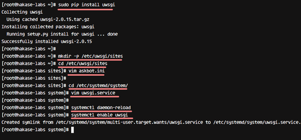
So with this, uWSGI has been installed, and you should see it running as a service.
Step 5 - Install and configure Nginx webserver
So, Askbot is now installed, and it’s running under uWSGI sock file ‘askbot.sock’. In this step, we will be using Nginx web server as a reverse proxy for uWSGI application ‘Askbot’.
To begin with, install Nginx with the yum command.
yum -y install nginx
Now go to the Nginx ‘conf.d’ directory and create new virtual host file ‘askbot.conf’ with the vim editor.
cd /etc/nginx/conf.d/
vim askbot.conf
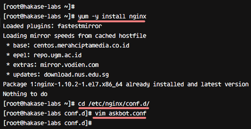
Paste the following Askbot Nginx configuration in the file.
server {
listen 80;
server_name askbot.me www.askbot.me;
location / {
include uwsgi_params;
uwsgi_pass unix:/run/uwsgi/askbot.sock;
}
}
Save the file and exit from the editor. Now, test the configuration to make sure there is no error.
nginx -t
Next, start Nginx and uWSGI services.
systemctl start nginx
systemctl start uwsgi
And enable them to start automatically at the boot time.
systemctl enable nginx
systemctl enable uwsgi
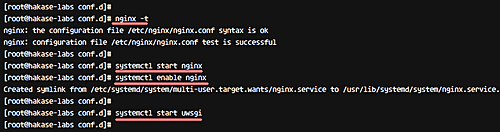
So Nginx is now installed as a reverse proxy for uWSGI application ‘Askbot’.
Step 6 - Test the setup
Open your web browser and visit the Askbot domain name: askbot.me, and you will get to see the home page, as shown below.
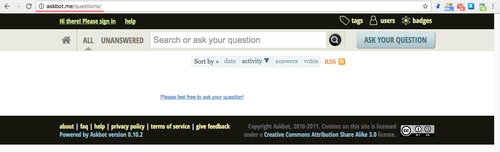
Here’s the Askbot user login page:
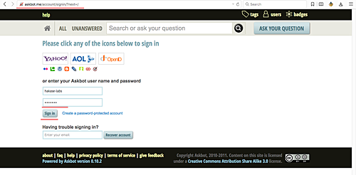
Askbot user dashboard:
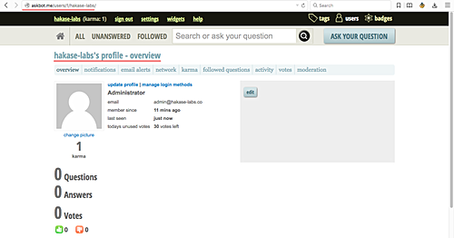
Askbot admin setting:
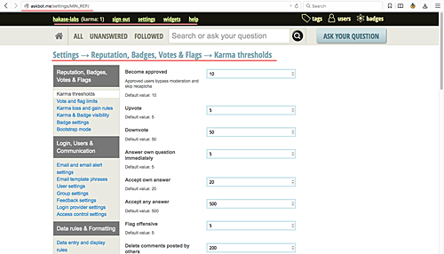
Askbot Django admin login:
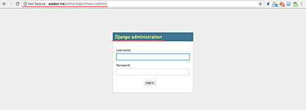
Askbot Django admin dashboard:
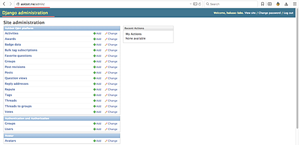
So the Q&A system application ‘Askbot’ has been successfully installed with uWSGI and Nginx web server on CentOS 7 server.
Reference

Comments
So what do you think? Did I miss something? Is any part unclear? Leave your comments below.